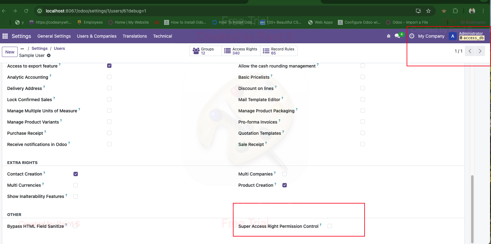
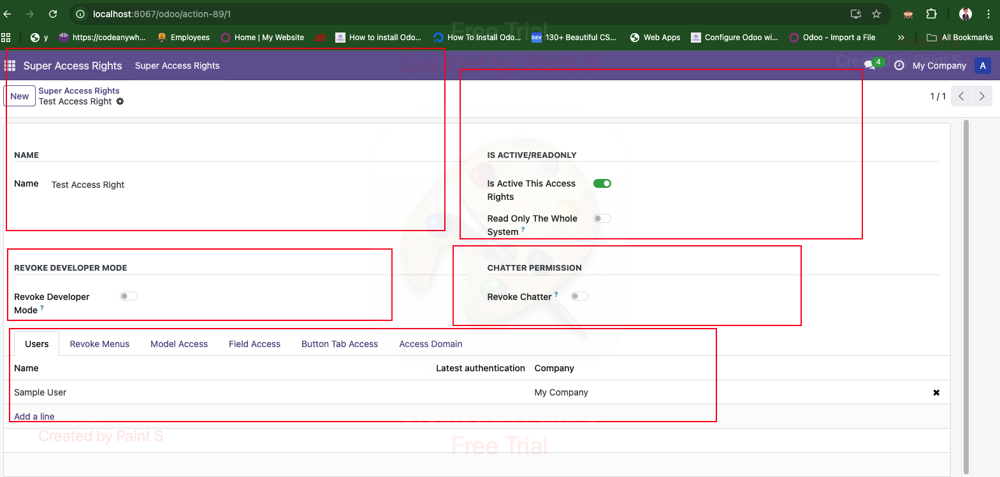
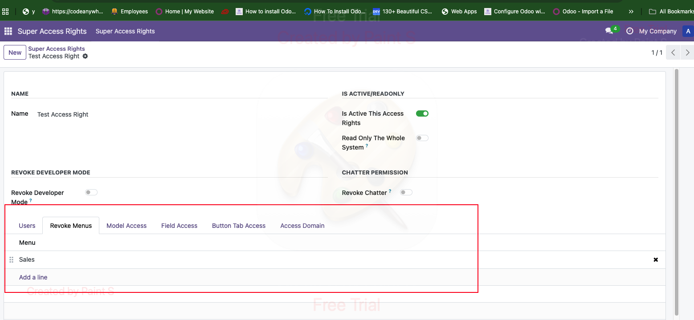
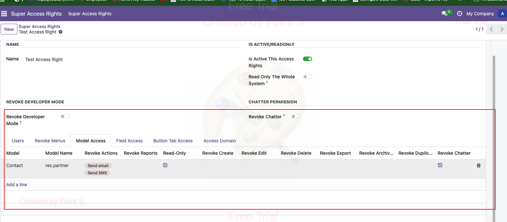
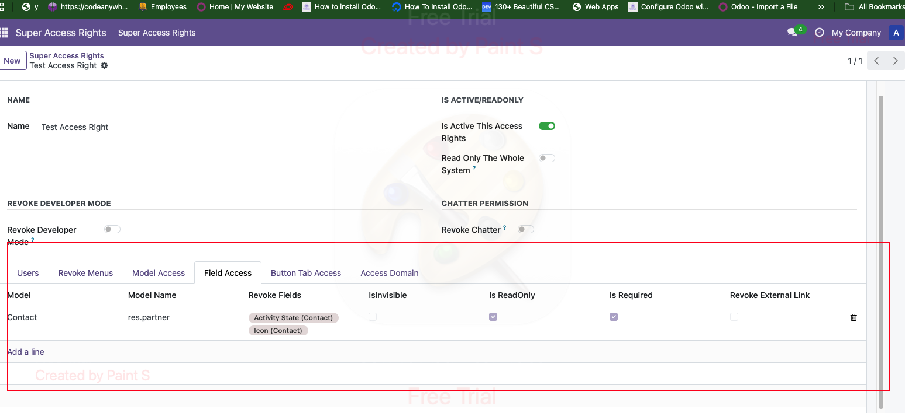
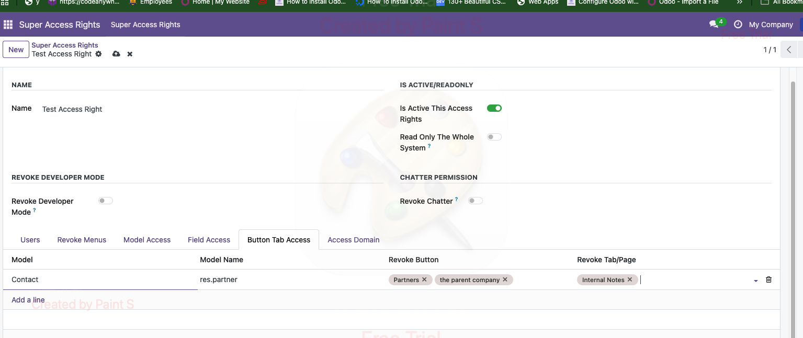
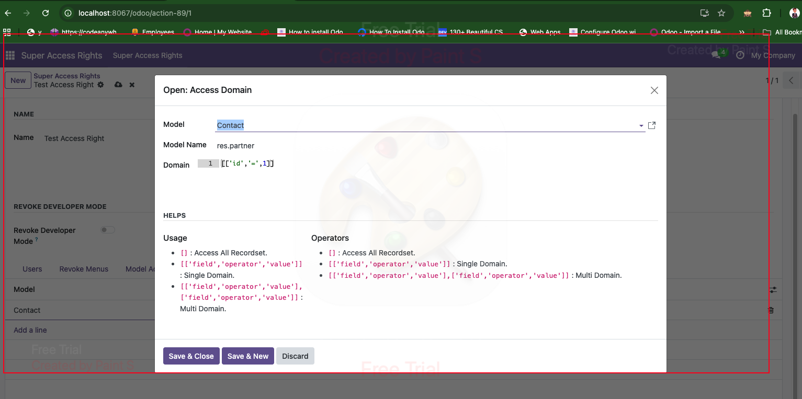

The Super Access Rights Management module provides a comprehensive solution for managing access control in Odoo. It empowers administrators to define and manage user permissions, roles, and access levels across different models, menus, fields, and actions — all through a smart and intuitive interface.
Step 1: Open the Users menu and enable access management for a user.
Step 2: Create or select an access right group, assign users, and save changes.
Step 3: Revoke access to specific menus.
Step 4: Select a model and revoke actions (Create, Edit, Delete, Archive, Export, Duplicate, Chatter, etc.).
Step 5: Revoke access to specific fields in the selected model.
Step 6: Restrict access to particular buttons or pages in views.
Step 7: Define domain filters to limit data visibility per model.
